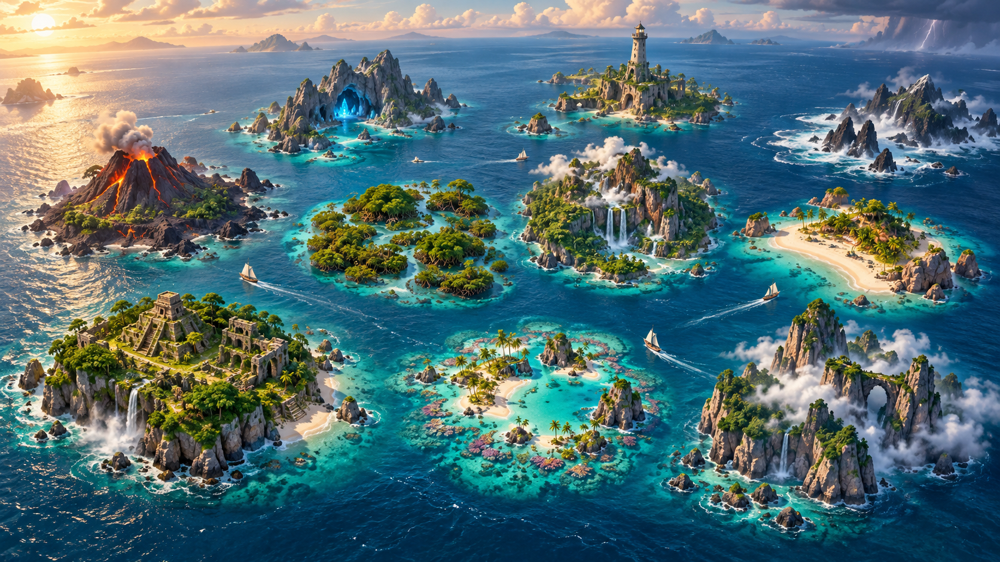

愛單字環島
IVOCAB ODYSSEY
💎 2 寶石
🍀 1 幸運草

Junior 2000 群島選擇一座島，展開航行
● 可探索👑 已成為島主每個 Unit = 一個關口
珊瑚初航島
沿著島上路線完成 25 個關口，登上山頂成為島主
💎 0
🍀 0
Island expedition · 已登島
珊瑚初航島從碼頭出發，沿著雨林山徑前往最高處的燈塔。
第 1 關 · Unit 1海灘登陸點 · 通過後解鎖下一關
珊瑚初航島 · Unit 1Easy 認知模式
20
❤️❤️❤️
0 / 5